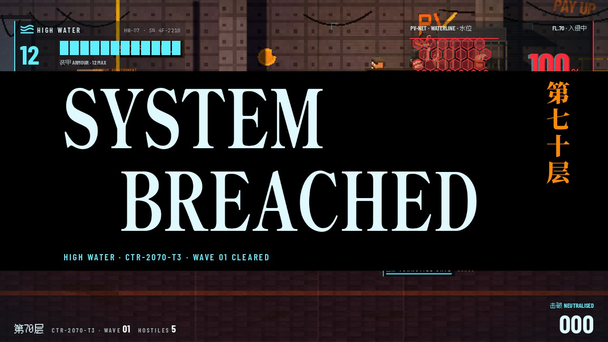
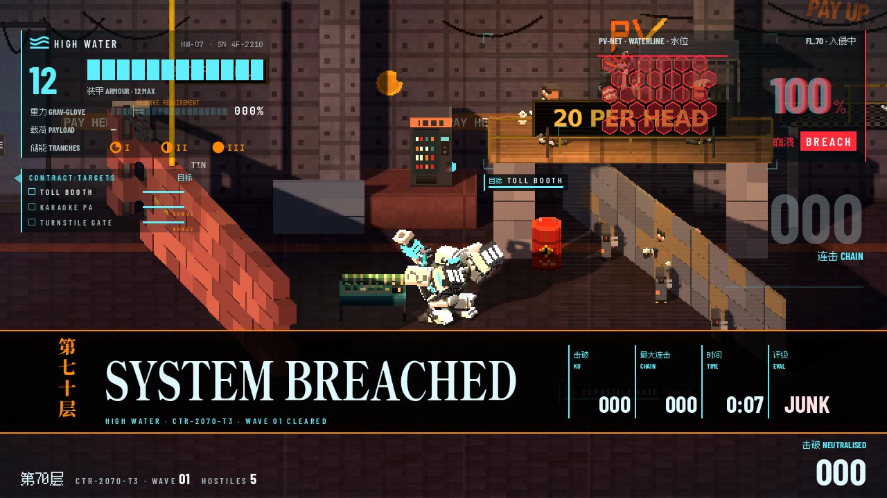
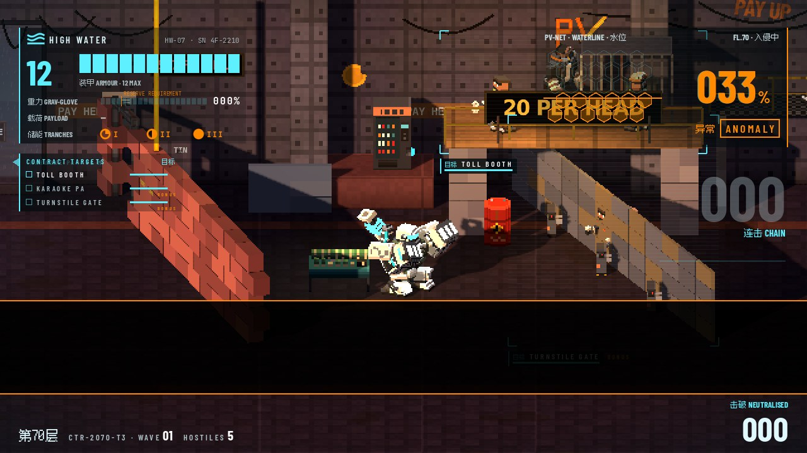
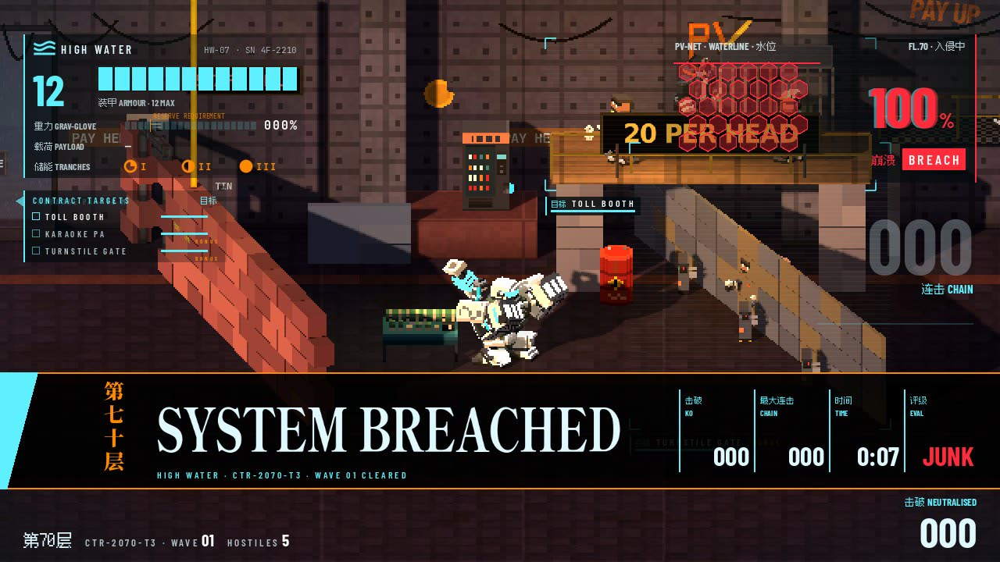
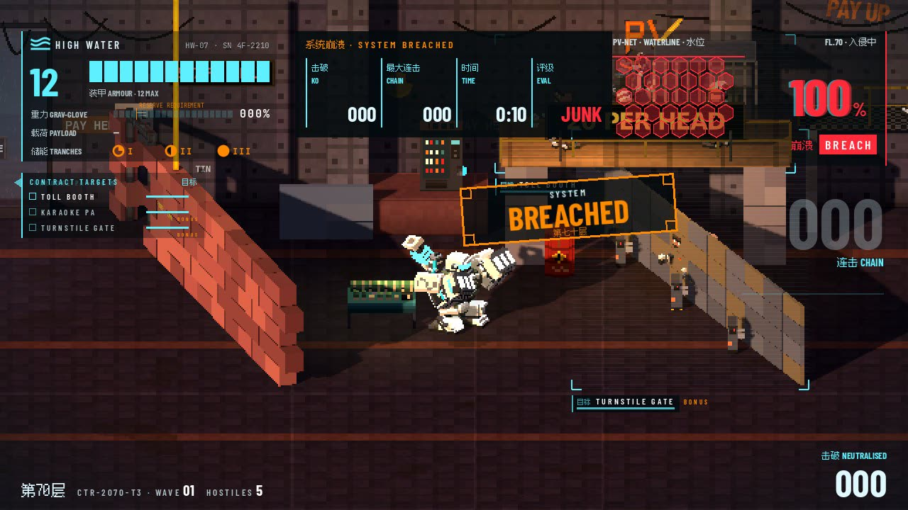
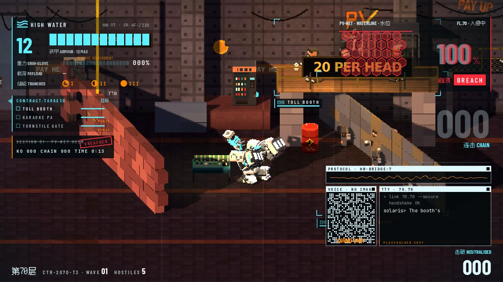

Archived decision board from HIGH WATER (2026). Picked: A, the slam strip: a band 21 % of the screen tall across the lower third, cleared in 1.8 s. ← back to the archive
System breached: smaller
Board · Readout · 2026-10-02 · pick one
Jonas, playtesting: the SYSTEM BREACHED card after a section clears is full-screen and far too big. Below are three options and the current card. Each is a real capture from F70 (the fight frozen, the clear fired by Hud.big_clear(), by tools/ui/hud_shots.tscn -- clear=1), as a 12 fps clip and stills.
All three keep Foley's sting on the same beats (the wipe at 0, the cuts at 0.12, 0.22 and 0.32 s, then the tallies). None blocks input. None takes the full-screen lane, so they share the screen like the wave strip does. The world stop and slow-motion are the level's and stay as they are. Copy is placeholder. Switching is one line (hud.clear_look).
Today: the full card
CARD · 3.2 SA 420-unit black band (58 % of the screen) for over a second, then the results strip. It reads as a stage-end screen, not a section beat.

CARD · 0.7 SThe fight is gone behind it.
A · The slam strip (recommended)
A · 1.8 SA band 21 % of the screen tall slams in across the lower third. It hard-cuts in with a 3-frame overshoot (over, under, set). SYSTEM, BREACHED and 第七十层 cut in on the sting, and the four values print at the right. It holds to about 1.45 s, then wipes out sideways behind a cyan edge.

A · HOLDThe fight's centre and both top panels stay clear. The band sits above the HUD's bottom row.

A · FRAME 1The slam: the band, overshooting, before the type.

A · OUTThe sideways wipe.
B · The diegetic stamp
B · 2.4 SContract Optics corners stamp BREACHED in the world, where the section's last thug fell, so it moves with the floor. SYSTEM, BREACHED and the floor print on the sting. The values come in the top-centre chip, the same chip a plain wave clear uses.

B · HOLDThe stamp, and the chip between the top panels.
C · The list row
C · 2.6 SNothing central. A row under the contract list flashes. "SECTION 01 · PV-NET HELD" strikes through on the sting, a small BREACHED stamp lands beside it, and the values print in one line.

C · HOLDThe quietest. It's too quiet for a section, the bigger beat of the two: it reads like a ticked objective.
Recommendation: A. It is one clear beat, as loud as a section deserves, at a fifth of the card's area and half its time. It never touches the fight's centre or the top panels. The sting, the type cuts and the tallies stay together, so it still sounds like the card.
Honestly, B reads better in motion: the stamp landing in the world, where the section ended, ties the result to the place, and it feels the most like High Water's optics. It loses on two counts. It splits your eye between the stamp and the top chip. And the last KO is usually next to you, so it lands on the action. If Jonas likes it, my suggestion is a hybrid: A for section breaks, and B's stamp in place of the plain wave clear's top strip. A wave would get the small beat in the world and a section the strip.